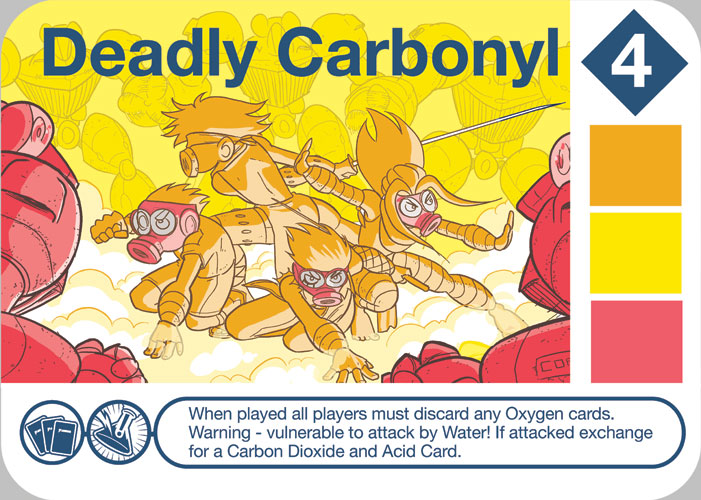

Real Science
We made sure the science of Valence is accurate. The Science Ninjas team includes two PhD chemical engineers and there has always been a commitment to ‘getting the science right’ while making sure Valence was as fun and simple to learn as possible.

In addition to our two primary science advisors we would like to acknowledge the help of several scientists who have advised us on Valence:
Dr. Jonathan Levine (National Energy Technology Laboratory)
Dr. Teri Dankovich (Carnegie Mellon University)
Dr. Cantwell Carson (National Energy Technology Laboratory)
Dr. Jeffrey Lancaster (Columbia University)
Dr. Mark Biscoe (City University of New York)
(Soon to be Dr.) Steve Crowley (City University of New York)
Have a science question about our game? Send it to: info@scienceninjas.net. Here are some questions that have come up so far:
In the game, Acids and Bases react to form Salt and Water, and Deadly Carbonyls and Water react to form an Acid and CO2. Are these both real reactions?

Yes! The acid / base reaction or acid / metal oxide reactions are common reactions for students to learn about in school (metal oxides are bases too actually!) and they create a salt and water when they combine as: NaOH + HCl -> H2O + NaCl. Typically the reaction between water and a deadly carbonyl looks like this: COCl2 + H2O -> CO2 + 2HCl (in this case the Deadly Carbonyl is COCl2 - phosgene!). In Valence, all our reactions happen in nature, but the stoichiometry isn’t always perfect, since if you really had a phosgene and a water, you should technically get 2 acids.
What are Deadly Carbonyls? And are they really deadly?
Carbonyls are molecules that have a C=O bond. In the first version of Valence, all the molecules that you can make include halogens (Cl and F), but in real life you can have many different type of carbonyls, some with metals even. Many of them are deadly, but in different ways. For instance Phosgene (COCl2) has been used as a chemical weapon, particularly during WWI. Ketones like Formaldehyde or Metal Carbonyls are often carcinogenic.
I can make NaKO in the game - is that a real molecule?
One of our science advisors Cantwell responded to this one: “They (Na2O and K2O) both have the same space group, cF12. So I imagine there is some solid solubility, but I can’t find the binary phase diagram.” In other words, we decided that it could be a metal oxide, it just might be very hard to make in the lab...(and it’s still kind of hard to make in Valence!)